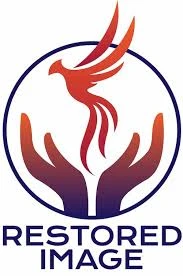

50% of all proceeds of M.A.G.I.C. Meds goes towards Restored Image to assist our local community
The goal of Restored Image is to build and offer outreach within our area homeless shelters,
halfway houses, churches, businesses, and local public schools.
We serve side by side with our partners from within our community to ensure that these target groups have assistance attaining the essential items they need to support themselves and their families.
We invest our time and resources into organizing community clothing drives, furniture drives, charitable donations, and providing access to affordable health care coverage.
Please partner with us as we continue to make positive changes in our community.